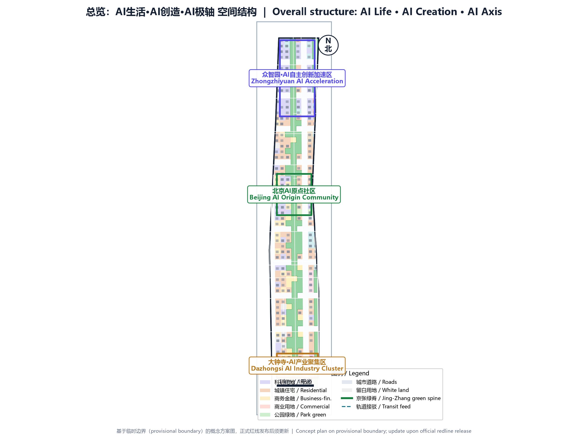
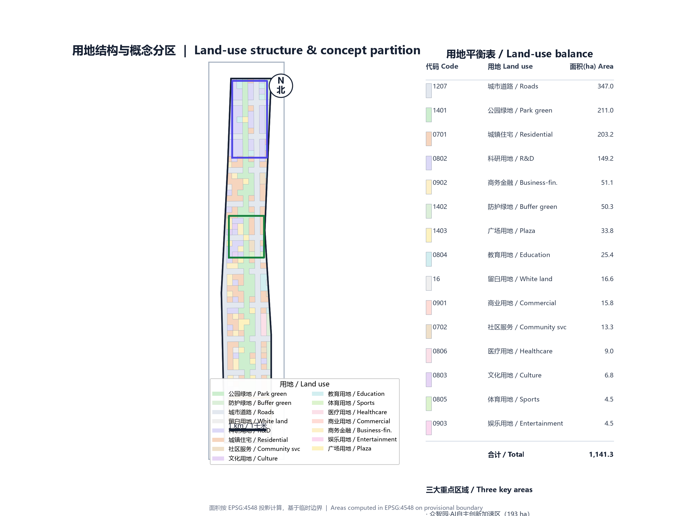
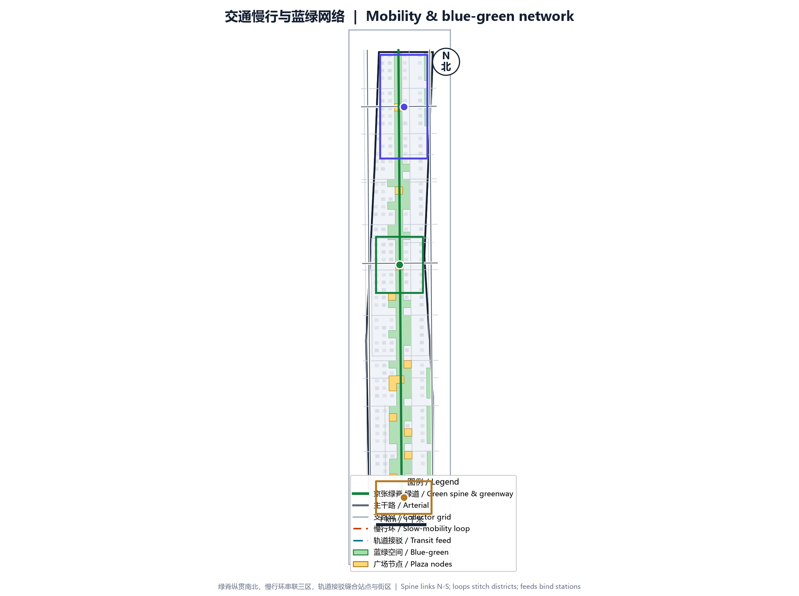

AI Life · AI Creation · AI Axis
Centennial Jing-Zhang AI Innovation Belt Concept Plan
Design Basis and Source List
This plan is prepared using the open-call file set released by open-city-ai/haidian. Key sources include design_brief.json, agent_taskbook.json and allowed_design_space.json. Because official road redlines, ownership, municipal capacity and heritage controls are not fully published, the concept design uses the provisional boundary provisional_boundaries.geojson.
Three-Level Scope Framework
The proposal mirrors the three-level scope: coordinated research area ~43.6 km², overall design area ~11.4 km², key areas ~3.7 km². The three key areas are Zhongzhiyuan, Beijing AI Origin Community and Dazhongsi.
Coordinated Research Area: Industry and Future City Research
The Jing-Zhang railway was the first trunk railway designed and built by China. It is surrounded by Tsinghua, Peking University, CAS institutes and leading tech firms. The proposal converts the industrial-heritage linear space into the AI-era urban innovation spine.
Overall Design Area: Urban Renewal and Regulatory-Plan-Level Urban Design
The overall design takes the Jing-Zhang railway heritage green spine as the north-south AI Axis and builds a spatial structure of three districts, two wings, one belt and multiple nodes. Green ratio is 22.898%, public-space ratio 2.957%, building density about 9.13%, total floor area about 11.73 million m².

Detailed Design of Key Areas
Zhongzhiyuan is positioned as a garden-style innovation district. Beijing AI Origin Community is positioned as a campus-adjacent transformation quarter. Dazhongsi is positioned as an urban intelligent-economy quarter. They carry the themes of creation, axis and life respectively.

AI Innovation Ecosystem, Personas, and AI+ Scenarios
The plan builds service scenarios around three personas—lab innovators, engineering entrepreneurs and urban residents—and proposes ten AI+ scenario cards and three AI pilgrimage landmarks.
Land Use, Building Scale, and Retain-Renovate-Demolish Strategy
R&D land is about 149 ha, residential about 203 ha, commercial and business about 67 ha, green and open space about 295 ha. The union of building footprints is about 104 ha, with 315 building footprints in total.

Transport, Rail, Municipal Infrastructure, and Public Services
The transport system is structured as one spine, one loop, many lanes and many feeds. The greenway runs north-south, the loop connects the three districts, and rail stations adopt TOD compact development.

Blue-Green Network, Public Space, and Urban Character
The blue-green system centers on the Jing-Zhang green spine, about 190 m wide. Public space totals 3.38 ha at AI Origin, Dazhongsi, Zhongzhiyuan entrances and transit micro-hubs. Character follows the theme of industrial heritage × AI future.
Renewal Projects, Implementation Policy, and Phasing
Implementation is divided into three phases: near-term AI Origin Community, mid-term Zhongzhiyuan, long-term Dazhongsi. Policies include AI scenario positive/negative lists, flexible zoning, a renewal fund and a government-enterprise-university coordination platform.
Metrics, Area Recalculation, and Compliance Matrix
The three core visual metrics are site_area_sqm=11412825.386, green_ratio=0.22898 and public_space_ratio=0.029572, all recomputable from submitted geometry in EPSG:4548. The compliance matrix covers 23 requirements, the standard matrix six professional standards and the depth matrix fifteen nodes.

Risk, Copyright, and Compliance
Key risks include mismatch between official and provisional redlines, municipal capacity, heritage limits, AI data privacy and market volatility. Copyright is CC-BY-4.0 and generative-model assistance is declared in agent.json.
References
Core references include design_brief.json, agent_taskbook.json, allowed_design_space.json, provisional_boundaries.geojson, sources.json, source_registry.json, schema files, standards.json, templates/proposal.md and SKILL.md.